<<!DOCTYPE html PUBLIC "-//W3C//DTD XHTML 1.0 Transitional//EN" "http://www.w3.org/TR/xhtml1/DTD/xhtml1-transitional.dtd">
<html smlns="http://www.w3.org/1999/xhtml">
<head>
<meta http-equiv="Content-Type" content="text/html; charset=utf-8">
<title>Collapsible panels</title>
<style type="text/css">
<!--
body {
font: 100% Verdana, Arial, Helvetica, sans-serif;
background: #666666;
	margin: 0; /* its good practice to zero the margin and padding of the body element to account for differing browser defaults */
padding: 0;
text-align: center; /* this centers the container in IE 5* browsers. The text is then set to the left aligned default in the #container selector */
color: #000000;
}
.oneColLiqCtr #container {
width: 500px;  /* this will create a container 80% of the browser width */
background: #FFFFFF;
margin: 0 auto; /* the auto margins (in conjunction with a width) center the page */
border: 1px solid #000000;
text-align: left; /* this overrides the text-align: center on the body element. */
}
.oneColLiqCtr #mainContent {
padding: 12px 20px 0 20px; /* remember that padding is the space inside the div box and margin is the space outside the div box */
}
-->
</style>
<script src="http://lrrpublic.cli.det.nsw.edu.au/lrrSecure/Sites/LRRView/10378/applets/spry/SpryAssets/SpryCollapsiblePanel.js" type="text/javascript"></script>
<script src="http://lrrpublic.cli.det.nsw.edu.au/lrrSecure/Sites/LRRView/10378/applets/spry/Scripts/swfobject_modified.js" type="text/javascript"></script>
<script src="http://lrrpublic.cli.det.nsw.edu.au/lrrSecure/Sites/LRRView/10378/applets/spry/SpryAssets/SpryMenuBar.js" type="text/javascript"></script>
<link href="http://lrrpublic.cli.det.nsw.edu.au/lrrSecure/Sites/LRRView/10378/applets/spry/CSS/Level3_3.css" rel="stylesheet" type="text/css">
<link href="http://lrrpublic.cli.det.nsw.edu.au/lrrSecure/Sites/LRRView/10378/applets/spry/SpryAssets/SpryCollapsiblePanel.css" rel="stylesheet" type="text/css">
<link href="http://lrrpublic.cli.det.nsw.edu.au/lrrSecure/Sites/LRRView/10378/applets/spry/SpryAssets/SpryMenuBarHorizontal_edited.css" rel="stylesheet" type="text/css">
<style type="text/css" media="screen">#FlashID {visibility:hidden}</style></head>
<body><div id="Eucledian Plots" class="CollapsiblePanel CollapsiblePanelClosed">
<div class="CollapsiblePanelTab" tabindex="0">Eucledian Plots</div>
<div class="CollapsiblePanelContent" style="display: none; visibility: visible; height: 0px;">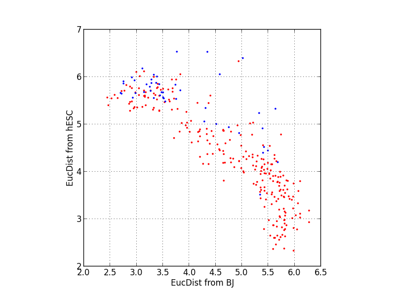

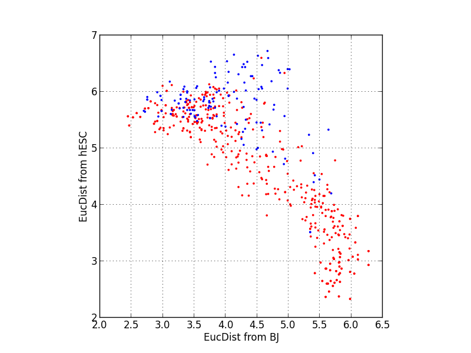
</div></div><div id="PCA Plots" class="CollapsiblePanel CollapsiblePanelClosed">
<div class="CollapsiblePanelTab" tabindex="0">PCA Plots</div>
<div class="CollapsiblePanelContent" style="display: none; visibility: visible; height: 0px;">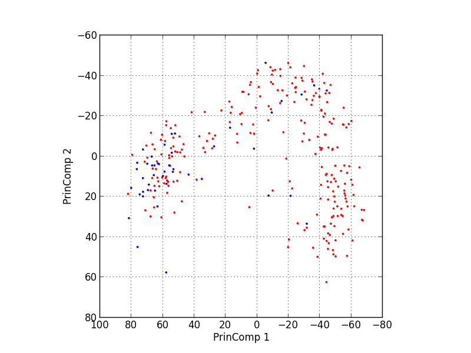

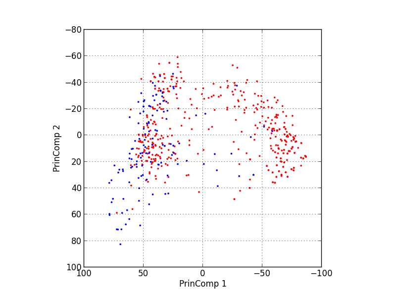
</div></div></body><div id="FitCurvesPoly" class="CollapsiblePanel CollapsiblePanelClosed">
<div class="CollapsiblePanelTab" tabindex="0">FitCurvesPoly</div>
<div class="CollapsiblePanelContent" style="display: none; visibility: visible; height: 0px;"><body>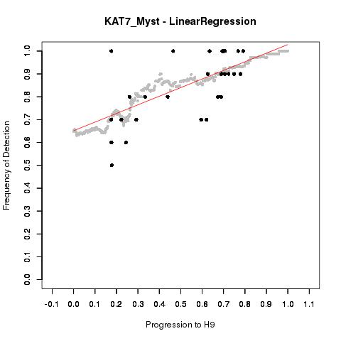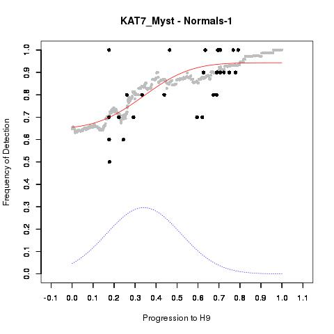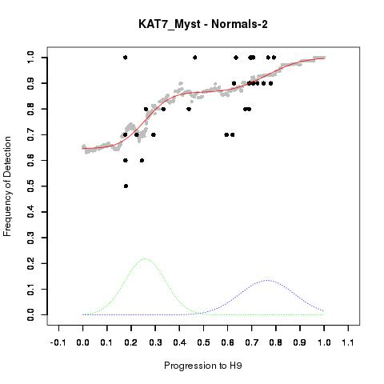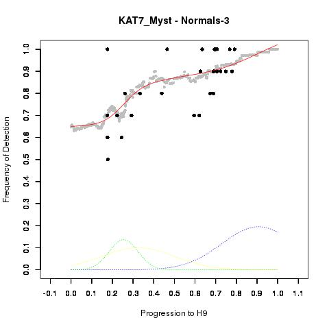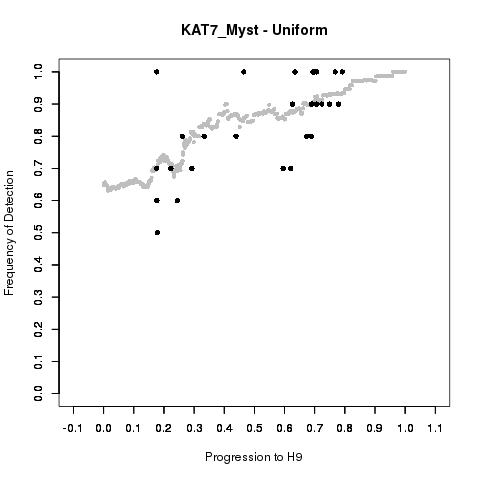</body></div></div><div id="FitCurvesMono" class="CollapsiblePanel CollapsiblePanelClosed">
<div class="CollapsiblePanelTab" tabindex="0">FitCurvesMono</div>
<div class="CollapsiblePanelContent" style="display: none; visibility: visible; height: 0px;"><body></body></div></div><div id="FitCurvesAll" class="CollapsiblePanel CollapsiblePanelClosed">
<div class="CollapsiblePanelTab" tabindex="0">FitCurvesAll</div>
<div class="CollapsiblePanelContent" style="display: none; visibility: visible; height: 0px;"><body>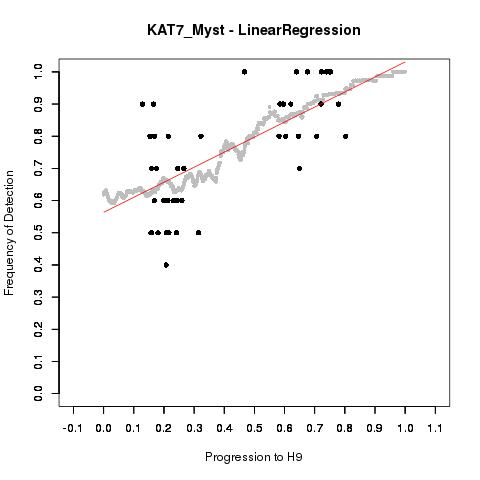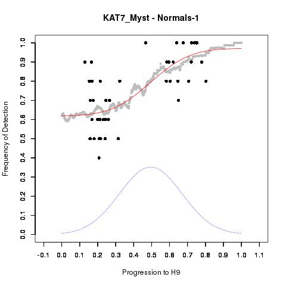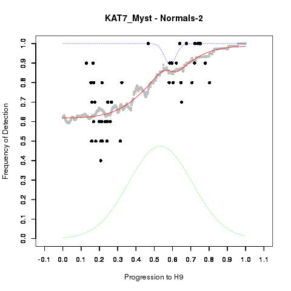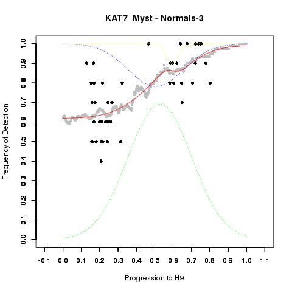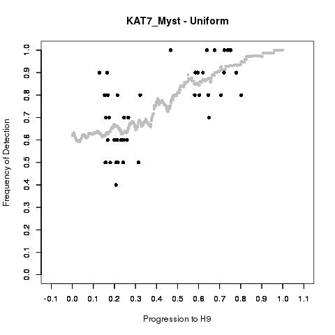</body></div></div><script type="text/javascript">
<!--
var CollapsiblePanel1 = new Spry.Widget.CollapsiblePanel("Eucledian Plots", {contentIsOpen:false});
var CollapsiblePanel2 = new Spry.Widget.CollapsiblePanel("PCA Plots", {contentIsOpen:false});
var CollapsiblePanel3 = new Spry.Widget.CollapsiblePanel("FitCurvesPoly", {contentIsOpen:false});
var CollapsiblePanel3 = new Spry.Widget.CollapsiblePanel("FitCurvesMono", {contentIsOpen:false});
var CollapsiblePanel3 = new Spry.Widget.CollapsiblePanel("FitCurvesAll", {contentIsOpen:false});
swfobject.registerObject("FlashID");
var MenuBar1 = new Spry.Widget.MenuBar("MenuBar1", {imgDown:"SpryAssets/SpryMenuBarDownHover.gif", imgRight:"SpryAssets/SpryMenuBarRightHover.gif"});
//-->
</script>
<p>KAT7_Myst<a href=http://www.genecards.org/cgi-bin/carddisp.pl?gene=KAT7_Myst>KAT7_Myst</a></p>
</body></html>